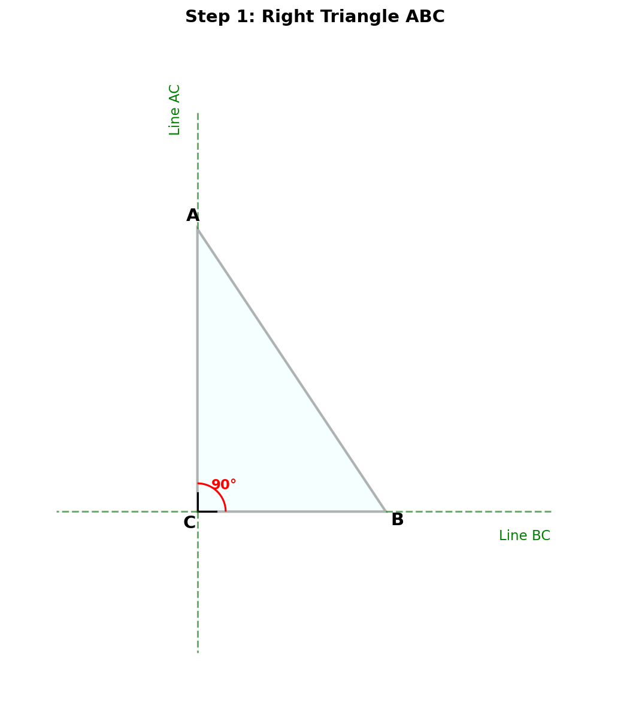
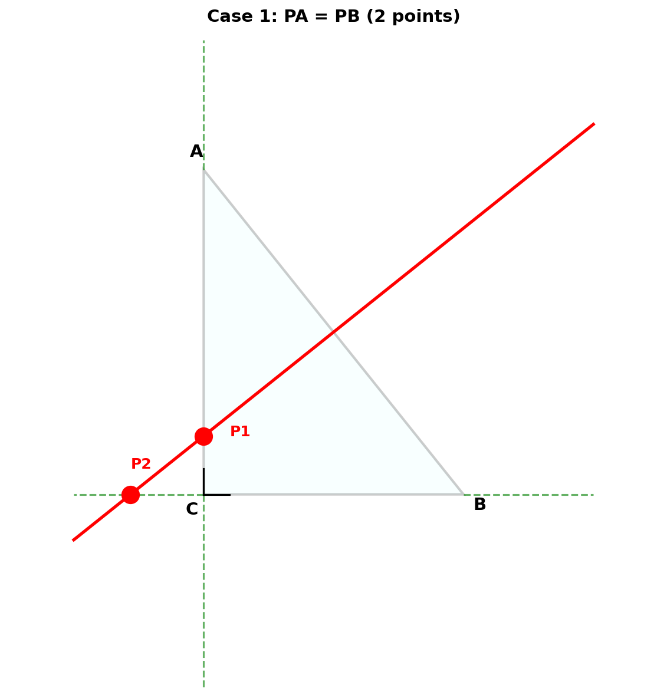
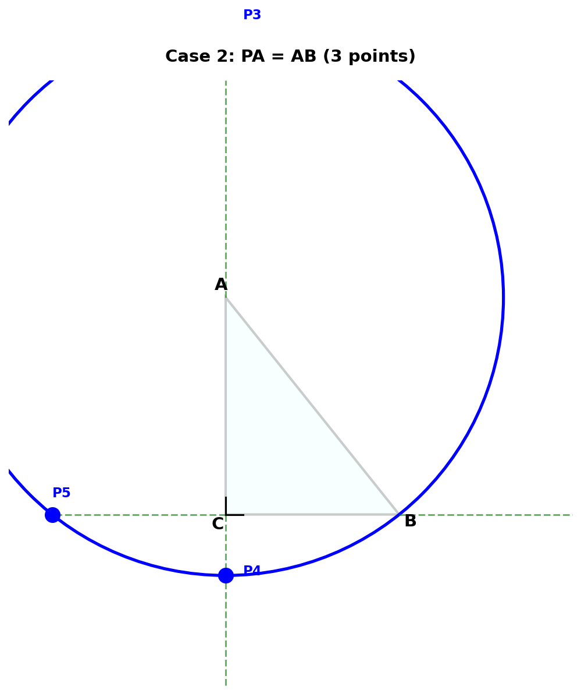
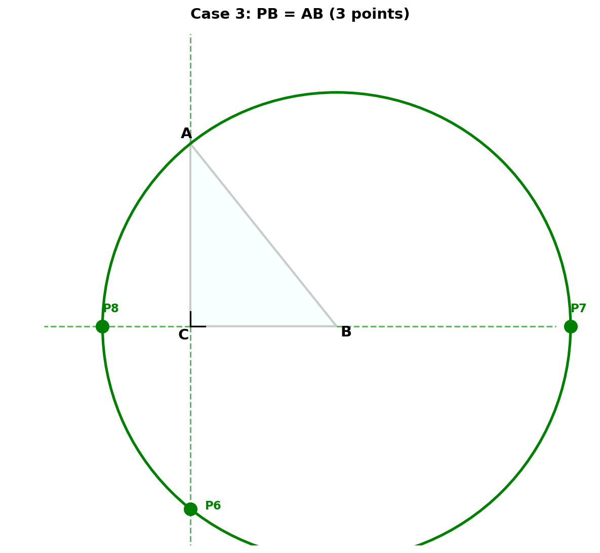
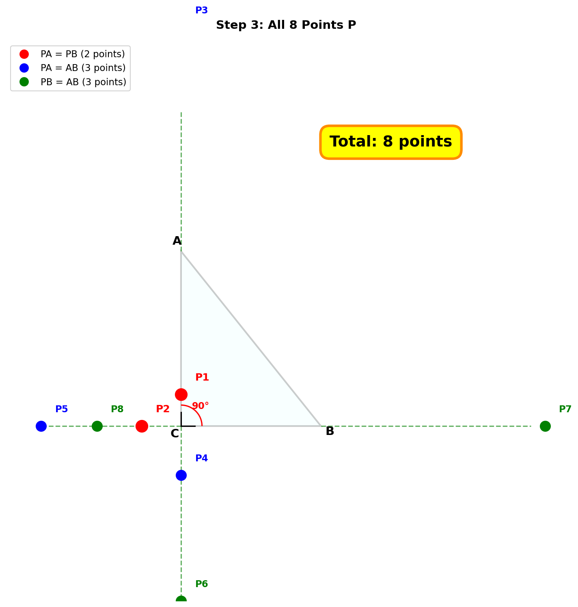

直角三角形中等腰三角形点P的个数
在 Rt△ABC 中，∠C = 90°，∠A ≠ 30°，∠A ≠ 45°，在直线 BC 或直线 AC 上取一点 P，使得 △PAB 是等腰三角形，则符合条件的点 P 有多少个？

△PAB 是等腰三角形意味着以下三种情况之一：
点 P 在 AB 的垂直平分线上
点 P 在以 A 为圆心、AB 为半径的圆上
点 P 在以 B 为圆心、AB 为半径的圆上
AB的垂直平分线与两条直线的交点：
情况1总计：2个点

以 A 为圆心、AB 为半径的圆与直线的交点：
情况2总计：3个点

以 B 为圆心、AB 为半径的圆与直线的交点：
情况3总计：3个点

如果某个点满足 PA = PB = AB，则 △PAB 是等边三角形。
当 P 在 AC 上时：∠A = 60°
当 P 在 BC 上时：∠B = 60°，则 ∠A = 30°
题目条件：∠A ≠ 30°，所以第二种情况不会发生。
一般情况下（∠A ≠ 60°），8个点互不重合。

符合条件的点 P 总数
2 + 3 + 3 = 8
最终答案
8 个